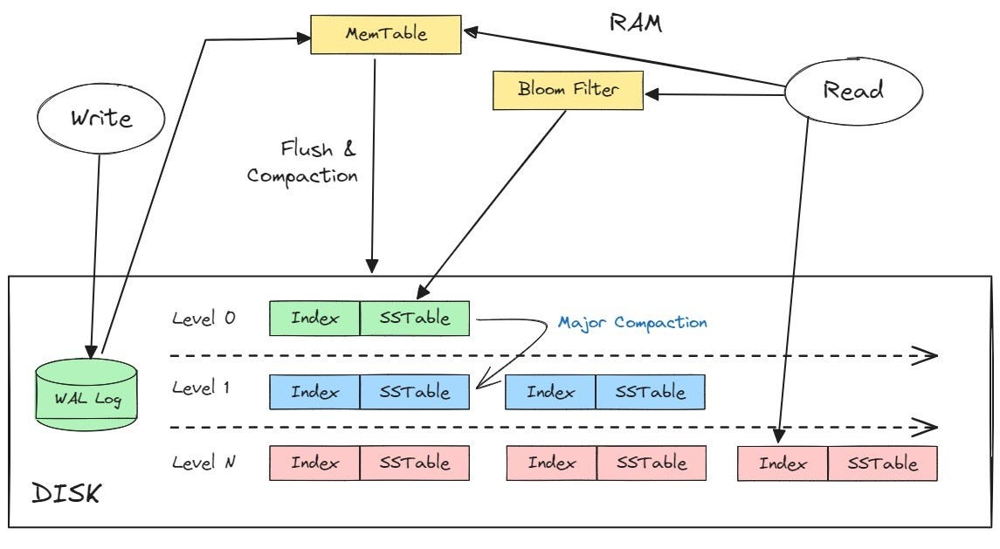

LSM trees can be used for indexing products by buffering writes in memory and flushing them to disk in sorted files. They support high write throughput and efficient range queries, making them ideal for dynamic product catalogs.

#include <iostream>
#include <fstream>
#include <map>
#include <vector>
#include <string>
#include <filesystem>
class SSTable {
public:
std::string filename;
SSTable(const std::map<std::string, std::string>& data, const std::string& fname)
: filename(fname) {
std::ofstream file(filename);
for (const auto& pair : data) {
file << pair.first << ":" << pair.second << "\n";
}
}
std::string get(const std::string& key) {
std::ifstream file(filename);
std::string line;
while (getline(file, line)) {
size_t sep = line.find(":");
if (sep != std::string::npos) {
std::string k = line.substr(0, sep);
std::string v = line.substr(sep + 1);
if (k == key) return v;
}
}
return ""; // Not found
}
};
class LSMTree {
std::map<std::string, std::string> memTable;
std::vector<SSTable> sstables;
const size_t memTableLimit = 5;
int sstableCounter = 0;
void flushMemTableToSSTable() {
std::string filename = "sstable_" + std::to_string(sstableCounter++) + ".txt";
SSTable sstable(memTable, filename);
sstables.push_back(sstable);
memTable.clear();
}
public:
void put(const std::string& key, const std::string& value) {
memTable[key] = value;
if (memTable.size() >= memTableLimit) {
flushMemTableToSSTable();
}
}
std::string get(const std::string& key) {
if (memTable.find(key) != memTable.end()) {
return memTable[key];
}
// Search in SSTables from newest to oldest
for (auto it = sstables.rbegin(); it != sstables.rend(); ++it) {
std::string result = it->get(key);
if (!result.empty()) return result;
}
return "Not Found";
}
};
int main() {
LSMTree tree;
tree.put("apple", "red");
tree.put("banana", "yellow");
tree.put("cherry", "dark red");
tree.put("date", "brown");
tree.put("elderberry", "black"); // This will trigger flush
tree.put("fig", "purple");
std::cout << "Get 'banana': " << tree.get("banana") << "\n";
std::cout << "Get 'fig': " << tree.get("fig") << "\n";
std::cout << "Get 'kiwi': " << tree.get("kiwi") << "\n";
return 0;
}
| Operation | Complexity |
|---|---|
| Read time | O(log(N)) |
| Write time | O(1) |
| Delete time | O(log(N)) |